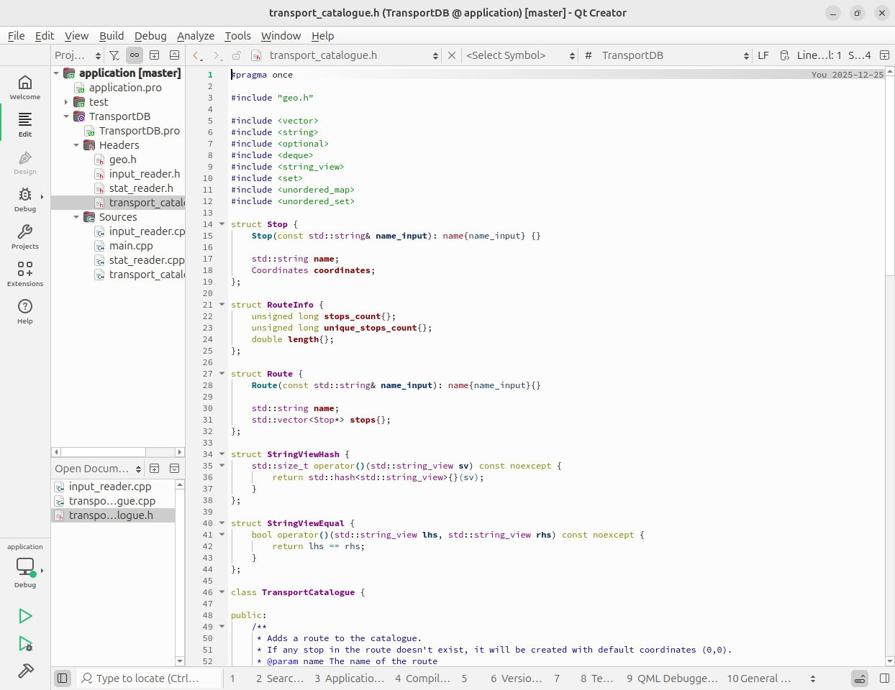
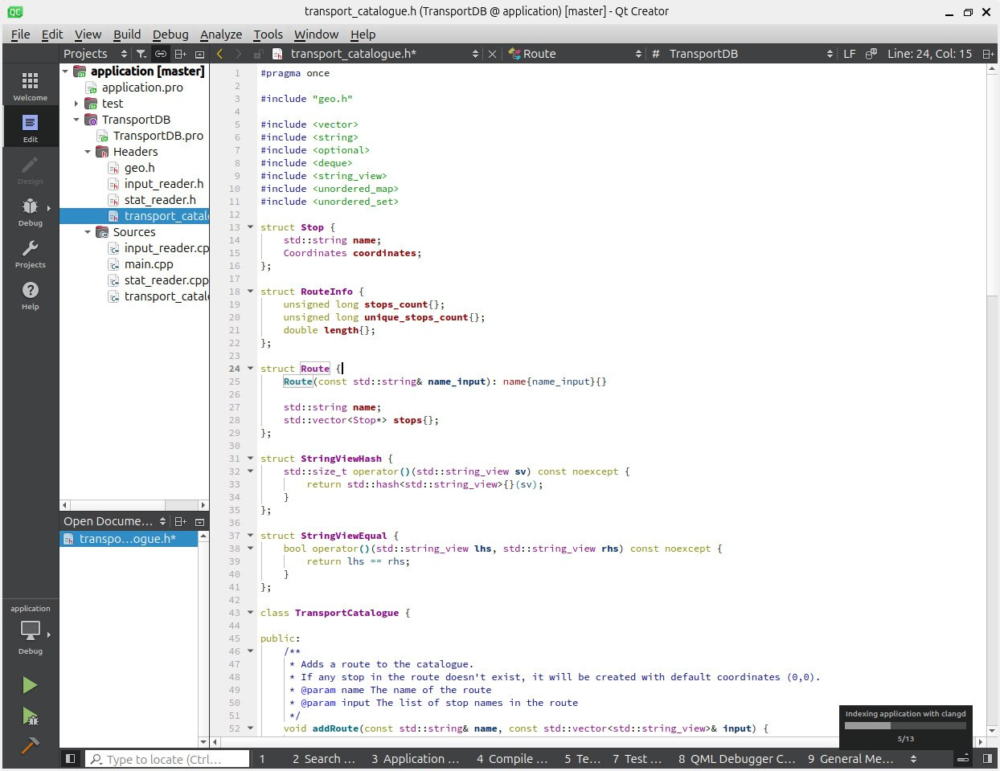

2025-12-26
14:32
На этой неделе в основном догонял материал по C++ курсу.
И у меня стал стабильно падать QtCreator, которым меня в рамках этого курса приучили пользоваться.
QtCreator версии 13, той, что идет в комплекте с Ubuntu 24.04. Падает, судя по всему, где-то на стыке с clangd во время парсинга файлов. Честно пытался поймать ошибку, но она, видимо, специально возникает только в те моменты, когда я давно изменения не сохранял. LLM утверждает, что были изменения в API clangd и нужно просто обновиться.
Обновился до 18 версии (https://github.com/qt-creator/qt-creator/releases/tag/v18.0.1)
Причем, что “интересно”, до этого я проходил курс по C, и там уроки были в code::blocks. И у него тоже стабильно крашилась версия из репозитория: начинает криво рисовать строку под курсором и все - до свидания. Тоже потребовалось обновиться на внешнюю версию.
И это притом, что версии в репозитории лочатся именно для того, чтобы получить более стабильный UX 🙄
#rant

14:32
